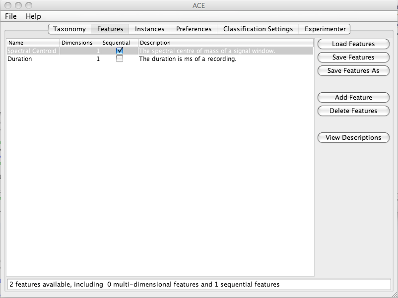

| Feature Definitions Panel |
|---|
Overview
The Feature Definitions Panel represents the contents of an ACE XML feature definitions file. This panel allows users to view, edit, load and save feature definitions. This information relates to features themselves, not to actual feature values extracted from features. The Instances Panel should be consulted if one wishes to view extracted feature values.
The features are displayed in table form. This table may be sorted based on the contents of a given column by clicking on the appropriate column heading. The contents of any row may be changed by double clicking on any entry on the table (or clicking once, in the case of check boxes). Columns may also be reordered by dragging their headings. All features must have unique names and must have at least 1 dimension. Any attempt to enter invalid entries will be rejected by the system.
Screen Shot

Panel Contents
The Name column specifies the name of a feature. The Dimensions column indicates the number of separate values that are stored each time the given feature is extracted. The Sequential column specifies whether a feature can be applied to sub-section of a data set (e.g. a window of audio). A value of true means that it can, and a value of false means that the feature may only be extracted once per data set. The Description column provides a brief description of each feature.
The status bar displays the total number of loaded feature definitions, including information on how many of them are multi-dimensional and how many of them are sequential.
The View Descriptions button causes the descriptions of each feature selected on the table to be displayed in a separate dialog box.
The Add Feature button causes a new feature to be added to the end of the table. It is given a unique name.
The Delete Features button causes all selected features to be deleted from the table.
The Load Features button loads a feature_key_file ACE XML file into memory and displays it. This overwrites any existing feature definitions.
The Save Features button saves the currently loaded feature definitions into the path referred to in the File Path Settings dialog box as a feature_key_file ACE XML file. The Save As button allows the user to choose the path to which the file is to be saved and updates the path in the File Path Settings dialog box.
Questions and Comments